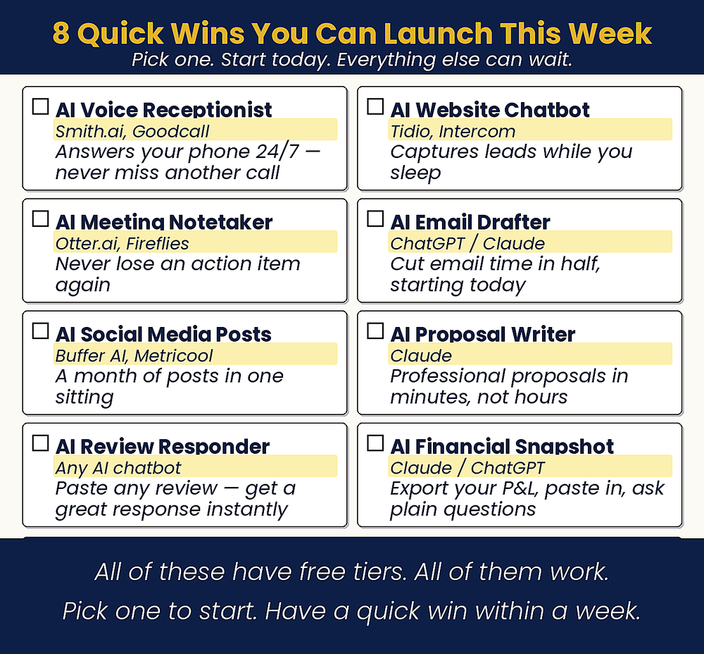

Chapter 20: Low-Hanging Fruit
Have One Running by the End of the Week
What should I start on today?

Chapter Recap
You have learned a lot. Now pick one thing and start. This chapter lists eight AI tools that solve real problems fast. Each one is affordable and easy to set up. Do not try all eight at once. Choose the one that fixes your biggest headache. Sign up for the free trial today. Give it one week. If it helps, keep it. If not, move on. The only wrong move is no move.
In This Chapter
- Eight Tools. Pick One.
- The Tool That Pays for This Book
- The Quick-Payback Eight
- Building Your Stack Over Time
Download
- 📄 Master Tool Directory — all eight tools with links, free-tier info, and beginner setup guides.
Your Move
Choose one tool from this list. Not your favorite, the one that solves your most immediate problem. Sign up for the free trial today. Give it one week. If it delivers, keep it. If not, move on to the next one on the list. The only wrong move is no move.

Read the full chapter in
AI Jiu-Jitsu: Run Circles Around the Big Guys, the book this toolbox comes from.
Prefer to have it done for you? BreakThru Growth can set up an AI voice receptionist for your business → BreakThruGrowth.com